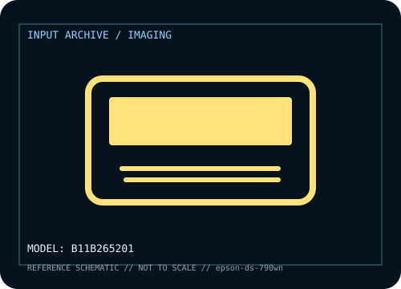

[ IMAGING AND AUDIO-CAPTURE PERIPHERALS // IDENTIFIED COMPONENT ]
Epson DS-790WN Network Document Scanner
Workgroup duplex scanner with feeder, touchscreen workflow and network options.

MODEL IDENTIFICATION: Manufacturer model / identifier: B11B265201. Compare the unit label, regional suffix, and revision against manufacturer documentation before repair or compatibility claims.
Model specifications
| Catalog subcategory | Imaging and audio-capture peripherals |
|---|---|
| Exact model / ID | B11B265201 |
| Model-specific features | 100-sheet ADF class, rated up to 45 ppm/90 ipm, network/touchscreen workflows; throughput depends on source/settings. |
| Interface and host support | Ethernet, Wi-Fi and USB options; software, credentials and network configuration govern capture. |
| Revision / driver caveat | Confirm B11B265201; firmware/security and host software affect older network workflows. |
Preservation and service notes
Inspect rollers/glass, document firmware/network settings and keep maintenance/page-count logs.
Record the as-found label, accessories, host OS, driver or firmware version, and test method. Separate observed condition from published specifications; family-level claims are not proof of an individual unit's revision.
Manufacturer source
- Epson DS-790WN Network Document Scanner — manufacturer model pageModel-specific manufacturer reference for identifying specifications, regional SKU, and linked current support documentation.
Manufacturer pages can change or retire. Preserve the applicable manual and note its revision when documenting a physical device.